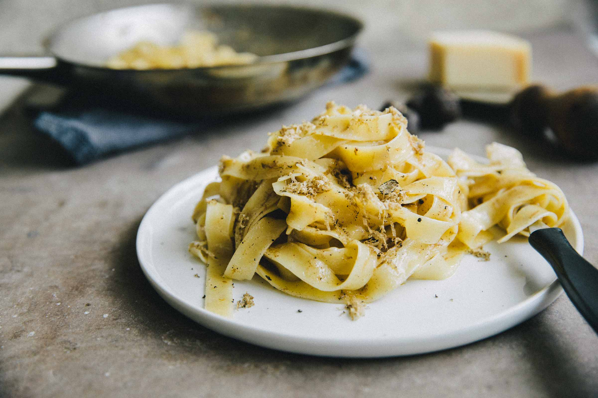

Truffle Tagliatelle

This aromatic sauce is the perfect match to the long silken strands of tagliatelle, made by our pasta artisans using simple, high-quality ingredients.
Ingredients
- 2/3 pound tagliatelle
- 1 whole black truffle
- 0.5 tablespoon Urbani truffle butter
- 1 clove garlic
- Sea salt
- Freshly ground black pepper
Steps
- Bring 3 quarts of water to a boil
- Cook tagliatelle until tender
- Heat truffle butter until melted
- Add garlic, salt & pepper, and grate in the black truffle
- Add pasta to pan, mix with sauce